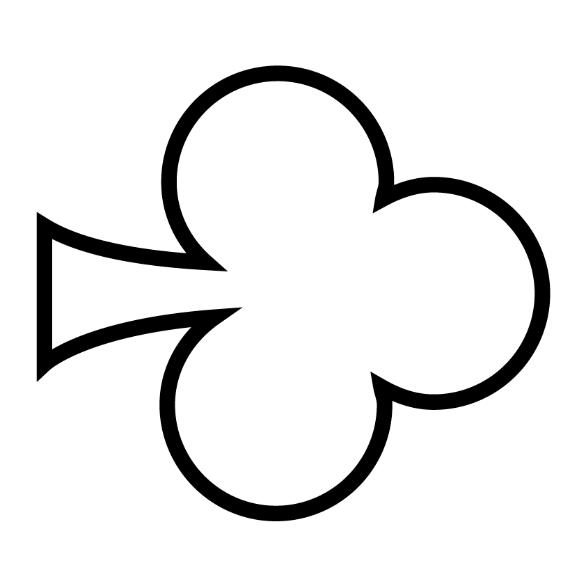
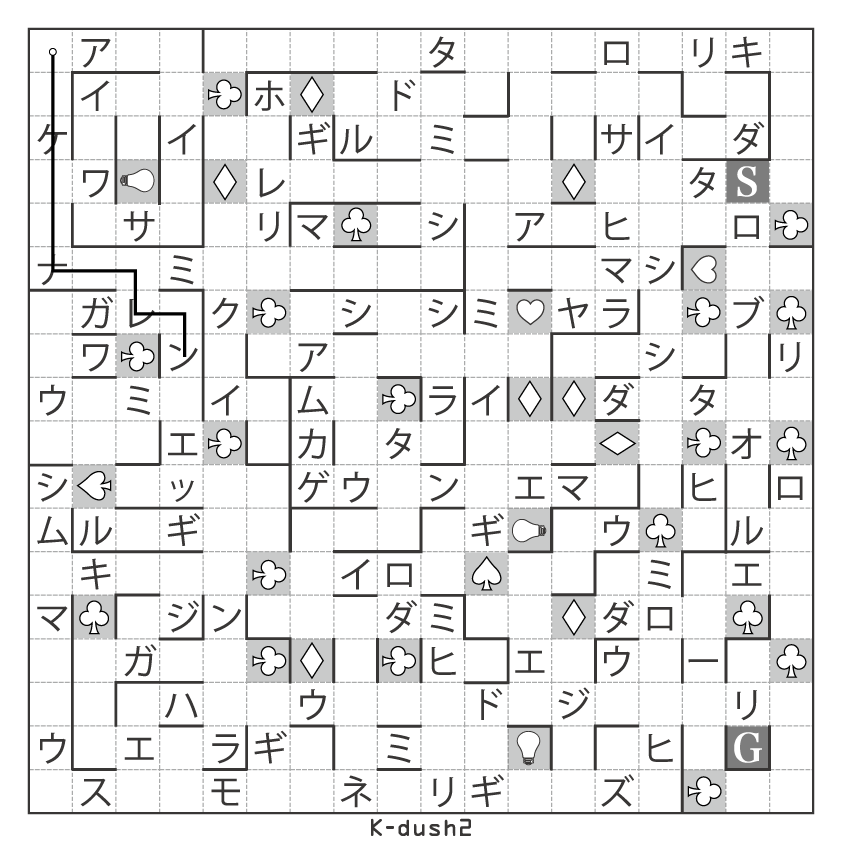
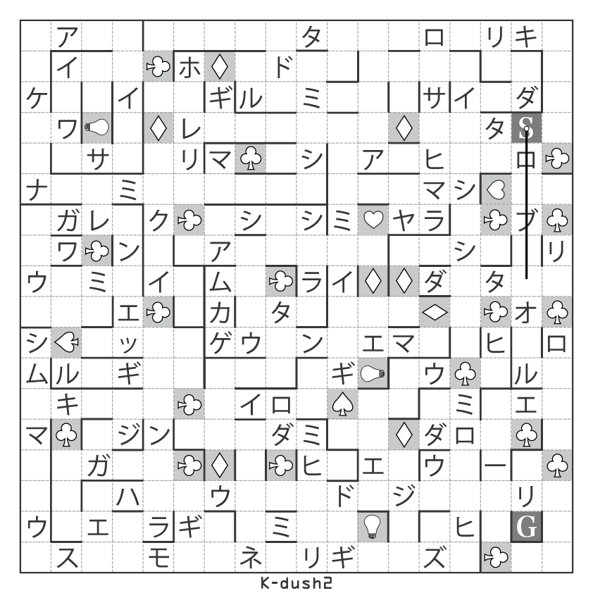
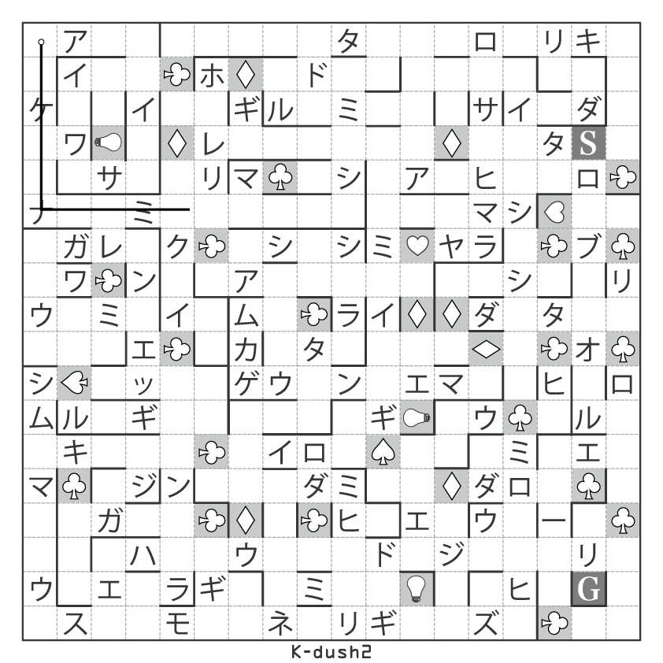
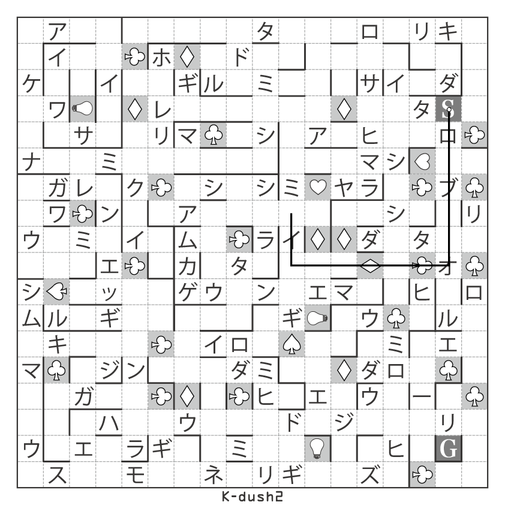
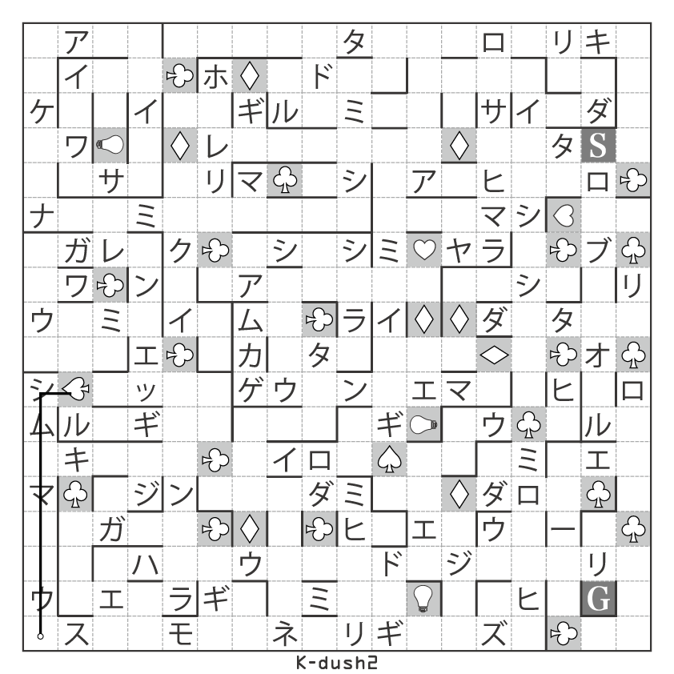
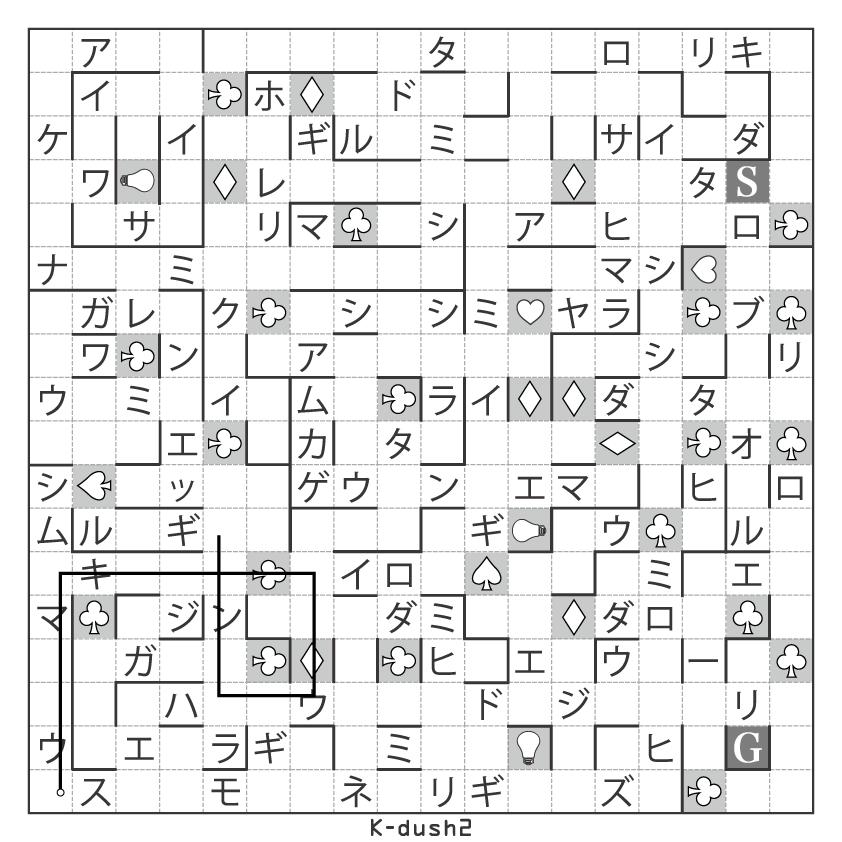
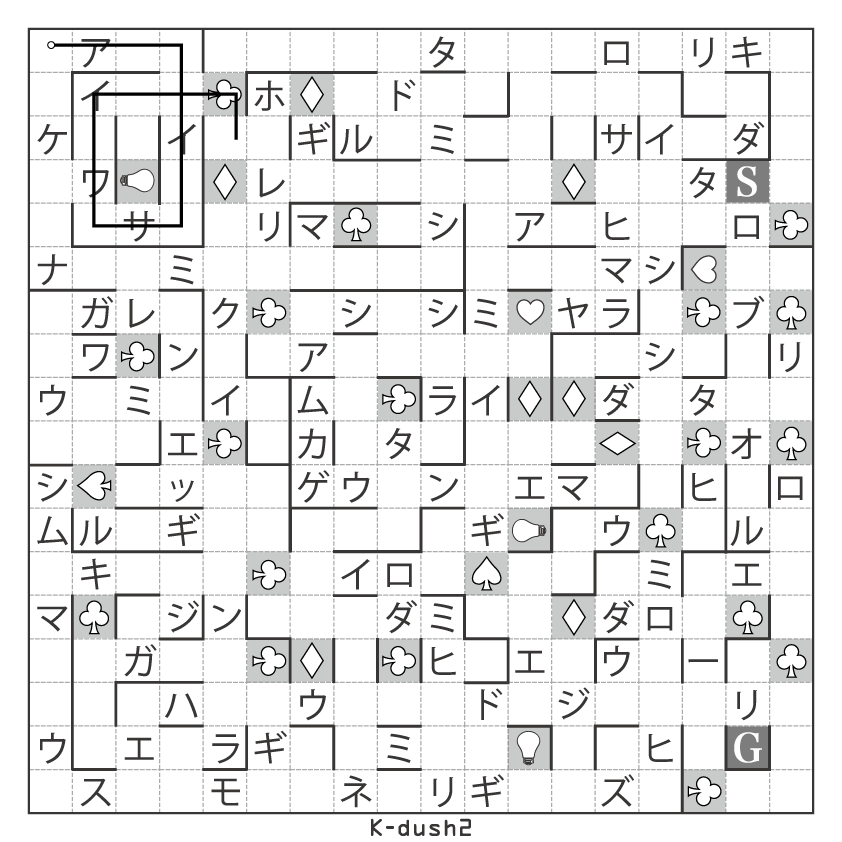
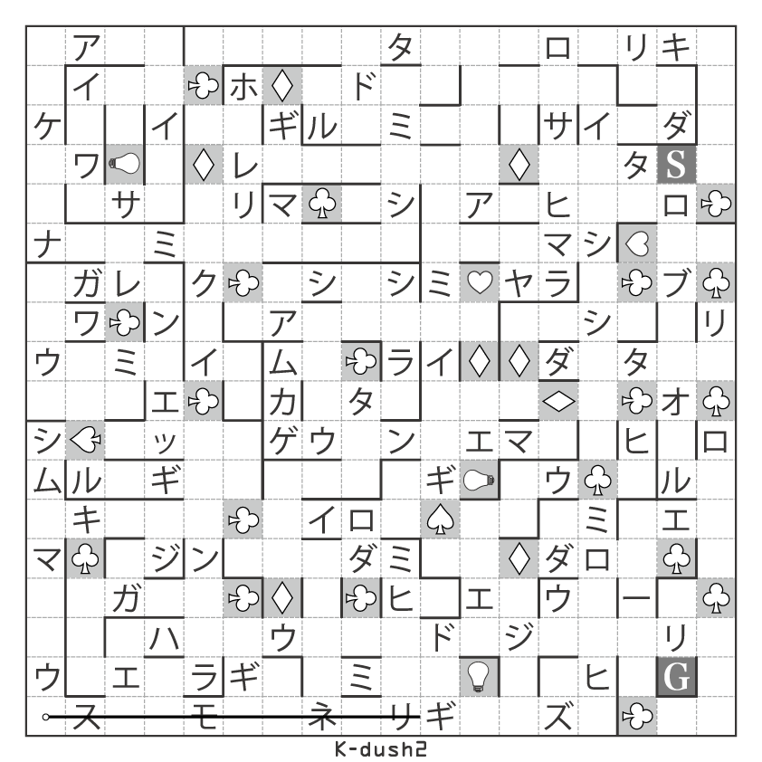

ヒントはこちら
問題の解く流れについて第1ヒント
web画面の1から8までの数字の下にある白黒の四角は、それぞれパネルを表しています。web画面の情報からあるパネルを選び、そのパネルをもとに迷路を解き進めます。第2ヒント
例えば、1の問題だったら3枚のパネルを使って「1」を、3の問題だったら5枚のパネルを使って「3」を表すことはできないでしょうか。第3ヒント
1から8までの数字を英語で考えてみましょう。第4ヒント
例えば1の問題について、パネルで「ONE」を作り、そのパネルに記されたルールに従って、18×18マスの迷路を解いてみましょう。1の問題
「E(白)」のパネルの情報から
、スタートの位置は18×18マスの迷路の一番左上のマス、ゴールの位置は18×18マスの迷路の一番右下のマスになります。「O」と「N」のパネルの情報から
、は通ることができません。最初の経路
2の問題
「W」のパネルについて
、記されている図形はサイコロの5の目です。「T」と「W」のパネルの情報から
、サイコロの5の面は裏返す必要があり、面の数が2に変わります。つまり2の倍数文字目を読むということになります。最初の経路
3の問題
「R」のパネルについて
、記されている図形はサイコロの6の目です。「T」と「R」のパネルの情報から
、サイコロの6の面は裏返す必要があり、面の数が1に変わります。つまりスタートを0マス目として1の倍数マス目にしか曲がれません。（どのマス目でも曲がることができます）「E(白)」のパネルの情報から
、スタートの位置は18×18マスの迷路の一番左上のマス、ゴールの位置は18×18マスの迷路の一番右下のマスになります。最初の経路
4の問題
「R」のパネルについて
記されている図形はサイコロの6の目です。6の倍数マス目でしか曲がることができません。「F」と「U」のパネルの情報から
を通る必要があります。最初の経路
5の問題
「F」と「V」のパネルの情報から
のマスからのマスにワープをする必要があります。「I」のパネルの情報から
、スタートの位置は18×18マスの迷路の一番左下のマス、ゴールの位置は18×18マスの迷路の一番右上のマスになります。最初の経路
6の問題
「I」のパネルの情報から
スタートの位置は18×18マスの迷路の一番左下のマス、ゴールの位置は18×18マスの迷路の一番右上のマスになります。最初の経路
7の問題
「E(白)」のパネルの情報から
、スタートの位置は18×18マスの迷路の一番左上のマス、ゴールの位置は18×18マスの迷路の一番右下のマスになります。「V」と「N」のパネルの情報から
、のマスからのマスにワープをする必要があります。最初の経路
8の問題
「I」のパネルの情報から
、スタートの位置は18×18マスの迷路の一番左下のマス、ゴールの位置は18×18マスの迷路の一番右上のマスになります。「T」と「G」のパネルの情報から
、サイコロの2の面は裏返す必要があり、面の数が5に変わります。つまり5回曲がれということになります。最初の経路
迷路の基本ルールについて
・「〜の倍数『文字』目」と「〜の倍数『マス』目」は違うことに注意しましょう。・迷路は『最短経路』で進むことを忘れないようにしましょう。